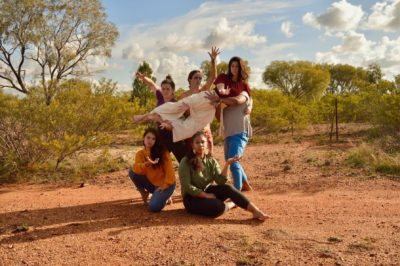

The Angel Number, Wings of Desire & Waylaid Works
Out of ISO
DATE: 26th Nov 2020 - 28th Nov 2020 At 7 p.m.
SPACE: Multiple spaces
COST: $30 / $20
New normal, back to normal, no normal. We’ve flattened the curve, we’ve counted the cases dropping,
we’ve masked and swabbed and sanitised, through a long winter of iso.
How we’ve missed the heady and sweaty and joyous euphoria of live performance! What have Sydney’s artists been thinking and doing and making in these strange times?
Come out of iso, and be a part of it, in these four weekends of new live performance for a distanced world.